Измерение индукции переменного магнитного поля с помощью измерительной катушки
1. Теория
Напряжение на выводах катушки, помещенной в переменное магнитное поле, определяется в соответствии с законом электромагнитной индукции Фарадея [3, 9]:
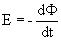
где E – напряжение (точнее, электродвижущая сила - ЭДС) на выводах катушки, F – суммарный магнитный поток через поверхность, ограниченную витками катушки (потокосцепление).
Для однородного синусоидального магнитного поля, индукция которого изменяется по закону B = B0coswt, напряжение на выводах катушки можно выразить следующим образом, проводя интегрирование по площади Sn каждого витка и суммируя по всем N виткам:
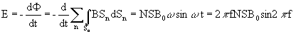
где N – число витков катушки, S – усредненное значение площади витков, f – частота изменения магнитного поля (w – циклическая частота), B0 – амплитудное значение магнитной индукции.
Таким образом, напряжение E на выводах катушки можно выразить через магнитную индукцию B по формуле:
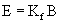
где Kf = 2pfNS – коэффициент преобразования (чувствительность), причем для разных частот f1 и f2
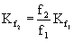
Для амплитудных (E0, B0) и действующих (Ed, Bd) значений напряжения и индукции выполняются аналогичные соотношения:
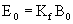
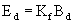
Поскольку большое распространение имеют источники питания переменного тока частотой 50 Гц, разумно определить для измерительной катушки коэффициент преобразования на частоте именно 50 Гц (K50). Измерить его можно с помощью системы колец (катушек) Гельмгольца [7] или калибровочного соленоида [4]с известной зависимостью индукции магнитного поля в зоне однородности от тока питания. Схема измерений следующая: система колец Гельмгольца (или калибровочный соленоид) запитывается от источника переменного тока частотой 50 Гц, для измерения действующего значения тока используется амперметр; измерительная катушка подключается к милливольтметру. Тогда, например, при использовании колец или катушек Гельмгольца:
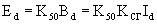
где Id – действующее значение тока, KСГ – коэффициент преобразования системы колец Гельмгольца (Bd = KСГ Id).
Отсюда можно найти коэффициент преобразования измерительной катушки на частоте 50 Гц:
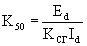
Итак, имея измерительную катушку с известным коэффициентом преобразования K50 на частоте 50 Гц, можно проводить измерения индукции переменных (синусоидальных) магнитных полей. Для этого измерительная катушка подключается к милливольтметру для измерения действующего значения выходного напряжения. Действующее значение магнитной индукции находим по формуле:
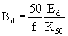
где f – частота изменения магнитного поля.
Использование совместно с измерительной катушкой фильтра нижних частот [5], интегратора или преобразователя ток-напряжение [2] позволяет построить измерительное устройство, чувствительность которого не зависит от частоты магнитного поля.
При отсутствии ферромагнитного сердечника измерительная катушка не вносит искажений в измеряемое магнитное поле, что в ряде случаев является неоспоримым достоинством.
Так как реальная катушка обладает помимо индуктивности активным сопротивлением и паразитной емкостью, зависимость ее чувствительности от частоты носит вышеуказанный линейный характер только в области частот ниже частоты собственного резонанса. Собственно, эта область частот и является рабочей.
2. Расчет коэффициента преобразования (чувствительности) цилиндрической измерительной катушки
Пусть измерительная катушка представляет из себя цилиндрический соленоид, эскиз которого показан на рис. 2.1.
Рис. 2.1. Эскиз цилиндрического соленоида: радиус отверстия R1 = R1, внешний радиус R2 = R2, высота H, диаметр обмоточного провода D, фактор упаковки [6] l.
ЭДС катушки равна сумме ЭДС всех ее витков, то есть:
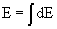
где интегрирование производится по объему, занятому обмоткой. Рассматривая катушку, как набор катушек поперечным сечением drdz каждая, в цилиндрической системе координат, ось z которой совпадает с осью катушки, можем записать:
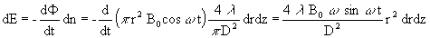
где D – диаметр обмоточного провода, а l – фактор упаковки [6]. Производя интегрирование по z в пределах от 0 до H (высота обмотки), а по r в пределах от R1 (внутренний радиус обмотки) до R2 (внешний радиус обмотки), получим для амплитуды ЭДС E0 катушки:
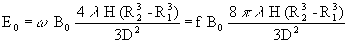
Тогда коэффициент преобразования на частоте f:
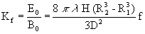
В частности, коэффициент преобразования на частоте 50 Гц:
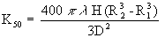
Видно, что чувствительность цилиндрической катушки возрастает примерно пропорционально кубу внешнего диаметра, высоте и числу витков.
3. Расчет соотношения сигнал-шум
Напряжение теплового шума VT в соответствии с формулой Найквиста, в том числе для цилиндрического соленоида с активным сопротивлением обмотки R, определяется следующим образом [2]:
где kB = 1.38 ∙ 10-23 Дж/K – постоянная Больцмана, T – абсолютная температура, Df – полоса частот, R – активное сопротивление соленоида. Активное сопротивление цилиндрического соленоида может быть рассчитано по формуле:
Тогда
Соотношение сигнал-шум:
В соответствии с полученным результатом соотношение сигнал-шум для цилиндрической измерительной катушки не зависит от диаметра обмоточного провода, но улучшается при более плотной намотке (пропорционально √l), а также растет примерно пропорционально квадрату внешнего диаметра катушки и пропорционально корню квадратному из ее высоты.
Чувствительность и соотношение сигнал-шум наиболее быстро растут с увеличением радиального размера измерительной катушки (т. е. внешнего диаметра), соответственно, для их повышения следует в первую очередь увеличивать именно этот размер.
4. Практическая конструкция измерительной катушки
Хотя коэффициент преобразования (чувствительность) и соотношение сигнал-шум растут с увеличением размеров измерительной катушки (особенно диаметра), тем не менее эти размеры должны быть по возможности малыми по следующим причинам. Во-первых, магнитное поле убывает пропорционально кубу расстояния от источника, поэтому для катушек больших размеров оно может иметь существенную неоднородность в пределах зоны потокосцепления. Во-вторых, для калибровки большой катушки потребуются кольца Гельмгольца или калибровочный соленоид с зоной однородности соответствующих размеров. В-третьих, катушки малых размеров дешевле и проще в изготовлении.
Для примера ниже приводятся параметры одной из измерительных катушек:
Внешний вид катушки показан на рис. 4.1. Катушка имеет гибкие выводы длиной по 100 мм.
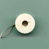 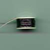
Рис. 4.1. Измерительная катушка. Размеры (по каркасу): наружный диаметр 20 мм, высота 11.5 мм, внутреннее отверстие диаметром 6 мм.
В случае, если нет источника однородного магнитного поля с известными параметрами (например, катушек Гельмгольца), то определить коэффициент преобразования измерительной катушки можно следующим образом. После изготовления измерительной катушки (с известным количеством витков) замеряется ее активное сопротивление и индуктивность, а затем с помощью программы Coil [1] уточняется фактор упаковки l (при намотке проводом диаметром порядка 0.1 мм внавал с пропиткой фактор упаковки приблизительно равен 0.4 ... 0.5). Тогда коэффициент преобразования может быть найден расчетным путем по геометрическим параметрам катушки и уточненному фактору упаковки с использованием написанных выше формул. Например, на рис. 4.2 показан расчет с помощью программы Coil вышеприведенной измерительной катушки.
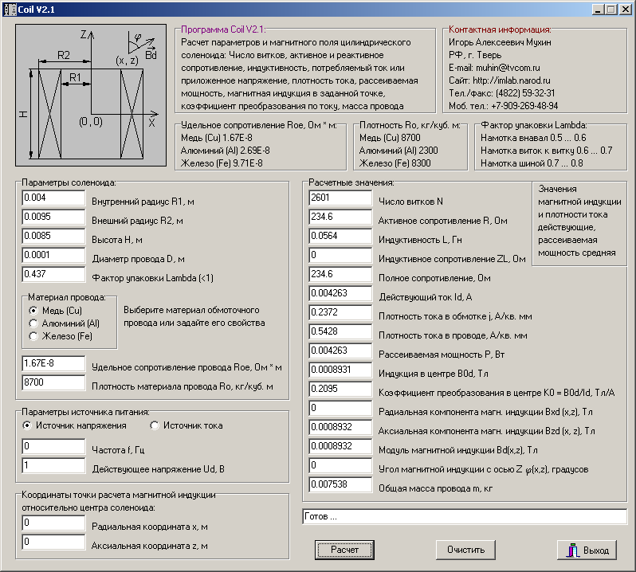
Рис. 4.2. Расчет измерительной катушки, показанной на рис. 4.1, с помощью программы Coil [1].
Хорошее совпадение рассчитанных и измеренных числа витков (2601 - 2600), индуктивности (56.4 - 54) и активного сопротивления (234.6 - 238) достигается при факторе упаковки, равном 0.437. Тогда, подставляя параметры катушки в формулу:
получаем K50 ≈ 123 мВ/мТл, что достаточно хорошо соответствует измеренному коэффициенту преобразования 109 мВ/мТл.
5. Измерения
Схема установки для проверки и калибровки измерительной катушки в переменном магнитном поле с помощью калибровочного соленоида [4] представлена на рис. 5.1. Обмотка калибровочного соленоида, имеющего коэффициент преобразования по току 490.3 мкТл/А, подключена через добавочный резистор R1 к усилителю мощности низкой частоты [8], на вход которого подается синусоидальный сигнал от задающего генератора осциллографа INSTRUSTAR ISDS2062B, подключенного к USB-порту компьютера. Контроль действующего значения тока осуществляется с помощью амперметра PA1 (мультиметр MY-65, диапазон измерения переменного тока 20 А). Резистор R1 облегчает регулировку тока посредством регулировки усиления усилителя мощности. Измерительная катушка расположена в центре калибровочного соленоида таким образом, что ее ось совпадает с осью соленоида, и подключена к вольтметру PV1, измеряющему действующее значение переменного напряжения (мультиметр APPA-107N, диапазон измерения переменного напряжения 2 В). Внешний вид установки показан на рис. 5.2.
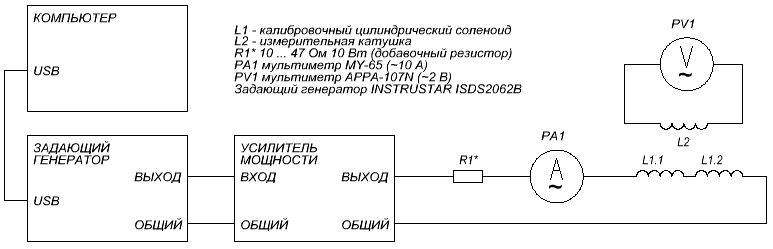
Рис. 5.1. Схема установки для проверки и калибровки измерительной катушки с помощью калибровочного соленоида [4] в переменном магнитном поле.
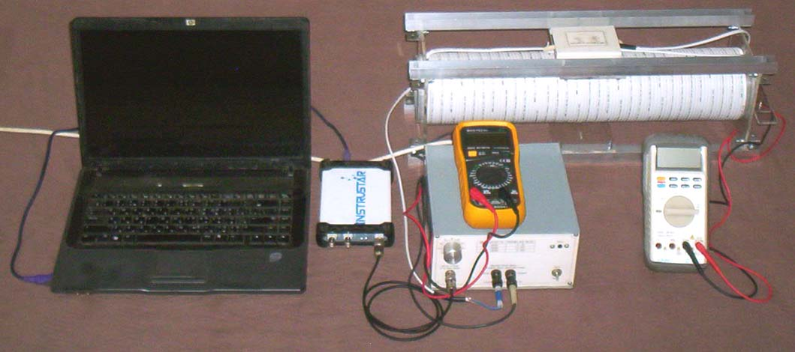
Рис. 5.2. Установка для проверки и калибровки измерительной катушки с помощью калибровочного соленоида в переменном магнитном поле.
На рис. 5.3 показана зависимость выходного напряжения измерительной катушки от магнитной индукции переменного синусоидального магнитного поля частотой 50 Гц (значения напряжения и магнитной индукции действующие).
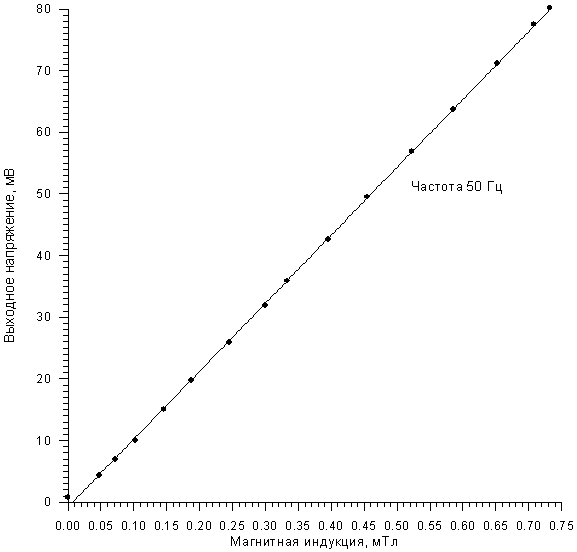
Рис. 5.3. Зависимость выходного напряжения измерительной катушки от магнитной индукции на частоте 50 Гц (значения действующие).
Зависимость выходного напряжения катушки от магнитной индукции носит линейный характер и хорошо описывается уравнением V = 110.234 ∙ B - 0.780357, где V - действующее выходное напряжение катушки, B - действующее значение магнитной индукции. Среднеквадратичное отклонение 0.241402. Таким образом, измеренный коэффициент чувствительности с помощью калибровочного соленоида составляет примерно 110 мВ/мТл, т. е. вполне соответствует ранее измеренному с помощью катушек Гельмгольца (109 мВ/мТл).
На рис. 5.4 показана зависимость действующего выходного напряжения катушки от частоты переменного синусоидального магнитного поля с заданным действующим значением индукции 490.3 мкТл (ток через обмотку калибровочного соленоида поддерживался равным 1 А, коэффициент преобразования калибровочного соленоида 490.3 мкТл/А) в диапазоне 40 ... 400 Гц.
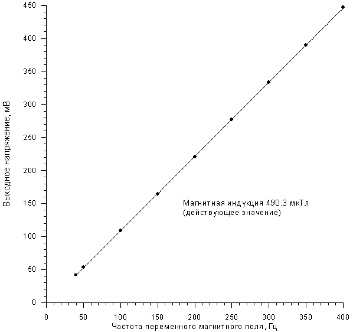
Рис. 5.4. Зависимость действующего выходного напряжения измерительной катушки от частоты переменного синусоидального магнитного поля (действующее значение магнитной индукции 490.3 мкТл).
Из графика рис. 5.4 видно, что зависимость выходного напряжения измерительной катушки от частоты переменного магнитного поля в диапазоне частот до 400 Гц носит линейный характер.
Ссылки:
22.09.2005
16.12.2008
05.04.2021
Альтернативные источники
энергии
Компьютеры и
Интернет
Магнитные поля
Механотронные системы
Перспективные
разработки
Электроника и
технология